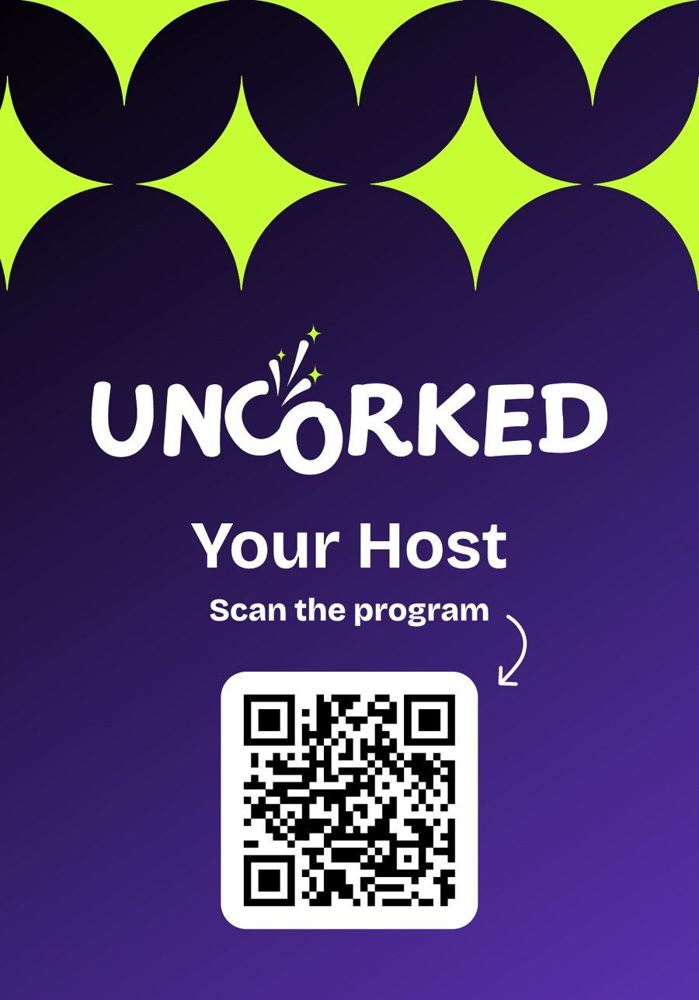
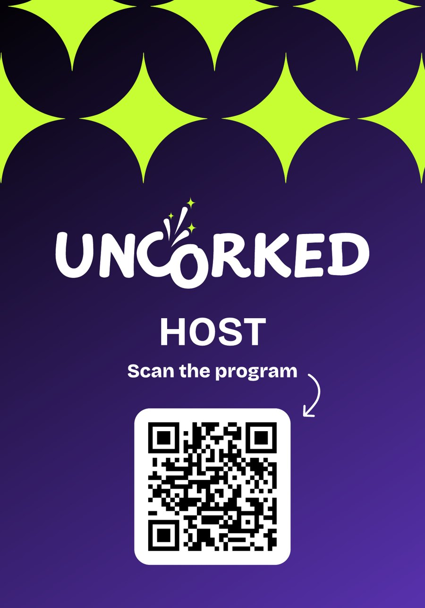

Wall of Fame banner
"Wall of Fame" tent banner
A photo wall with every partner logo, laid out so logos stay visible when people stand in front of it. Set in lime green to work with the bohemian tent interior.

Draft for reviewA brand, a website, a full set of event materials and a LinkedIn presence for Stavanger's new showcase and networking pavilion, delivered in about ten weeks.
ONS is one of the world's largest energy conferences, bringing an estimated 70,000+ visitors to Stavanger. The exhibition halls are busy and loud. Many of the conversations that actually move business forward happen later, downtown.
For 2026, ONS+ and a group of partners came together to build a co-created pavilion in downtown Stavanger: a place for energy leaders, investors, scaleups and international delegations to meet, showcase their work and do business. The partners voted on a name, and the pavilion became UnCorked.
The name created the first design challenge. "Uncorked" suggests popping a bottle of champagne, but Norwegian law strictly limits alcohol advertising. The identity had to capture the feeling of something being released, with no bottles, glasses or drinks anywhere in it.
Big conversations deserve great meeting places.
We explored a wide range of logo directions, from bold block wordmarks to playful scripts and colour combinations. The client chose a clean, confident wordmark with sparkles rising out of it. It suggests energy being released without ever showing what is being opened.
The client also wanted to show what UnCorked was releasing: innovation, connections, technology, the future of energy. Packing all of that into the logo would have made it unreadable at small sizes, so we built it into a separate graphic system of sparkles, bursts and patterns that works across the website, social posts and print.
We tested four colour schemes directly on the website layout. The client chose deep purple and electric lime: energetic, still professional, and close to the colours already seen in the ONS event photography.
uncorked.no was designed as a single, scrollable page that answers the questions visitors actually have: what is this, what is on, how do I join, and where is it.
Built for the client to run. We developed the site in WordPress with modular sections, so the client's team could edit copy live, swap images, show or hide sections and add programme items without going back to developers. Registrations stayed on Luma, which already handled approvals and waiting lists.
Getting the word out early. Before the full site launched, we delivered 16:9 event cover images for LinkedIn and Facebook, so promotion could start while the programme was still being finalised.
The pavilion needed to feel like UnCorked everywhere a guest looked. We designed the full set of physical materials in the same system, from large-format banners to the smallest handouts.


Partner and host badges, with a QR code straight to the programme.
A photo wall with every partner logo, laid out so logos stay visible when people stand in front of it. Set in lime green to work with the bohemian tent interior.
Marking the pavilion at the entry point to the ONS+ downtown area.
The premium invitation partners gave to selected guests, with a QR code to register. Explored in several styles, with and without QR codes.
Wayfinding and information signs around the pavilion.
A playful icebreaker pamphlet that gave guests a mission to start conversations.
Carried in the same identity, while respecting the rules on alcohol marketing.
Table cards, A5 flyers, a roll-up banner and web banners.
Stickers, tote bags, T-shirts and tape mockups showing how far the identity can travel.
With about three weeks to go, we created the ONS+ UnCorked LinkedIn page and took over the content. The goal was to build anticipation, keep the audience informed about speakers and activities, and give partners content they would want to share.
Every post on the page was planned, designed and published by the Kilowott team.
Profile, banner and voice, using the event's official naming and Norwegian sentence-case style.
A weekly plan for the run-up to the event, focused on awareness and momentum.
Day posts, "Today's schedule", countdowns and photo posts in one consistent system.
"Meet our expert" cards and slides introducing each speaker ahead of the event.
We produced a video for screens at the pavilion. It introduces the UnCorked brand and concept and showcases the programme, sponsors and pavilion partners, so visitors understood the space, and the ecosystem around it, as they walked in.
Figures marked TBC are being confirmed with the project team.
"[Client quote to be added]"
From a name with a legal problem to a pavilion people wanted to be part of, UnCorked shows how a clear idea, a flexible system and a fast team can bring a new event brand to life in weeks rather than months.
Planning an event or pavilion? Let's talk